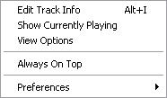
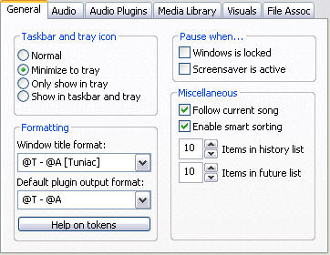

File
Import Files
Import Files will open a window box, which will ask you what files you want to open. You can also do this by dragging files from directories, directly into Tuniac. It should be stated that the function will not open directories. If you want to open directories, you should use the Import Directory function. You can also import m3u and pls files in here.
Import Directory
Import Directory will open a window box, which will ask you what directory to look in for adding songs. It will add all the files Tuniac can read from within the chosen directory. It will work recursive in doing this. The same can be achieved by draggin directories directly into Tuniac. If you want to add specific files you should use the Import Files function. In the process of browsing the directories, m3u and pls files will be read too.
Import Stream
Import stream will let you add url's from the Internet of online stream providers. These often are radio stations (but may also be other kind of streams) that you may want to listen too. If so, you can use this function to add those stream sources to a playlist or just the media library. To do so you add the stream url in the box that appears on chosing this function.
These are the way you can follow to add streams from the shoutcast website.
Method 1 (easy)
- Go to the shoutcast website (duh), it's http://www.shoutcast.com.
- Use your right mouse button on this button
 on the site, corresponding to the radio station you want to use and save the pls file on your pc.
on the site, corresponding to the radio station you want to use and save the pls file on your pc. - Drag the pls file into the player.
- Click on (one of) your added stream(s) and enjoy listening to it.
Method 2 (if you want to play it hard :P)
- Go to the shoutcast website (duh), it's http://www.shoutcast.com.
- Use your right mouse button on this button on the site, corresponding to the radio station you want to use and save the pls file on your pc.
- Open the pls file you just saved using a thing like wordpad. It should look something like this.

- Add the stream you want to listen too into Tuniac. You do this by using what comes after the File1=, or the other corresponding places (see red rectangles above) and by pasting that information into the Import Stream dialog. Then push enter.
- Click on your added stream and enjoy listening to it.
ForceSave MediaLibrary
When using this function, your media library will be saved immediately. This will prevent you from doing a lot of work creating a very good media library and then losing it later if your pc crashes or something else happens. Normally the media library gets saved only when closing Tuniac.
New Playlist
Normal playlist
This function will create a new empty untitled normal playlist. This can also be done by using the playlist manage tools.
Export Playlist...
This will export the selected files to a new playlist. In the window that will popup, you will have the choice between different kinds of playlists.
Exit
When you choose this function, Tuniac will close.
Edit

Edit Track Info (not working)
This is for editing track information. Explanation will follow when function in finished.
Show Currently Playing
This views the song that is currently playing in your media library or when your playing a playlist, in that playlist.
View Options
Here you can select what info Tuniac will display in the media library and in the playlists.
Always On Top
With this function you can enable always on top. This lets the program keep focus, even when not being the active window.
Preferences
Here you can change your preferences. For the options see Edit: Preferences submenu.
Edit: Preferences submenu
Show preferences
Opens the preferences popup.
General

Taskbar And Tray Icon
Here you can control how Tuniac behaves in the taskbar and in the tray on running and how it responds to minimizing its main window. In the normal way the program will be showed in the taskbar while running and shown on screen and on minimizing will stay there. With minimize to tray it will be on the taskbar while the window is open and will minimize to the tray. Only show in tray keeps the program in the tray at all times and the last option will keep the program shown in the taskbar and in the tray in both circumstances.
Window Title
Here you can decide what the windows title should look like and what information the plugins should use. The window title codes will be shown after you click the Help on tokens button, or when you hover over this button. Presets can also be chosen with the drop down lists.
Pause When...
Here you can choose if the player should pause on locking Windows NT systems, or when the screensaver becomes active.
Miscellaneous
Here you can choose if the player follows the current song. This will keep the song that is currently played in view. Smart sorting, will sort songs ignoring "a" and "the" in front of files/artists/albums. The history list and future list items control on how long these lists will be when right clicking on the previous or next button.
Audio
Crossfade Playback
Here you can decide if you want crossfading on and how long a crossfade between songs should take.
Audio Plugins
AudioCore Decoder Plugins
Here the plugins are listed. If options for configurations are available you can change them using the configure button.
Media Library

Media Library Base Folder (not working)
This doesn't work yet.
Advanced (not working)
This doesn't work yet.
Visuals
Visual Update Speed
Here you can change how quickly to updat visuals. The faster you want it to update, the more CPU power it will use.
File Associations
File Associations
In this menu you can change your preferences with respect to file associations. You can associate certain files to Tuniac and chose what to do when double clicking files in their folders when they are associated to the player.
Playback
Play / Pause
Start or pause playing.
Soft Pause
Soft pause is to stop playing after finishing the currently playing song.
Next
Start playing the next song.
Random Next
Random next is to go to a randomly chosen next song when you seem to always hear the same song again and again and you just want to go somewhere else in a playlist. Using it will make the previous song function not usable for one song, unless in shuffle mode, where it will just behave as the next function would.
Previous
Start playing the previous song, or with use of the ctrl button it will start playing one song backward in history.
Shuffle Play
This will shuffle songs.
Repeat
Here you can change your repeat behaviour. For the options see Playback: Repeat submenu.
Clear Queue
This will clear the queue that has been made.
Clear Scheduled Pause
You can undo the pause here command with this option.
Playback: Repeat submenu
Off
No songs will be repeated.
One Track
The current playing song will be repeated.
All Tracks
After finishing playing all the songs, it will restart playing all the songs again.
All Queued
This will replay the files in the queue.
View
Source Selector
Change the display mode to the source selector.
Visualization Window
Change the display mode to the visualisation window.
Help
Tuniac Help
This is to access these pages, for now you have to access them via the start menu of Windows.
Check For Updates (not working)
This is to update Tuniac when that function becomes available.
About Tuniac
Information about Tuniac.